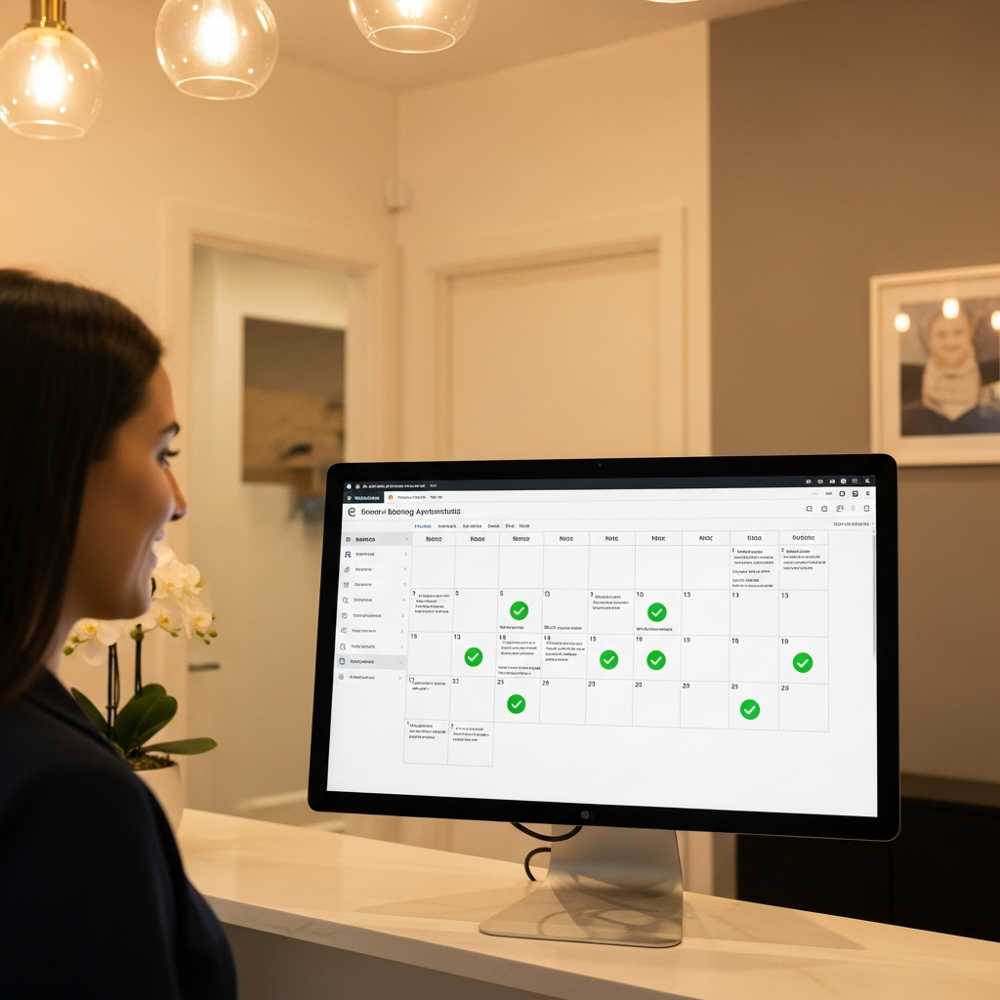
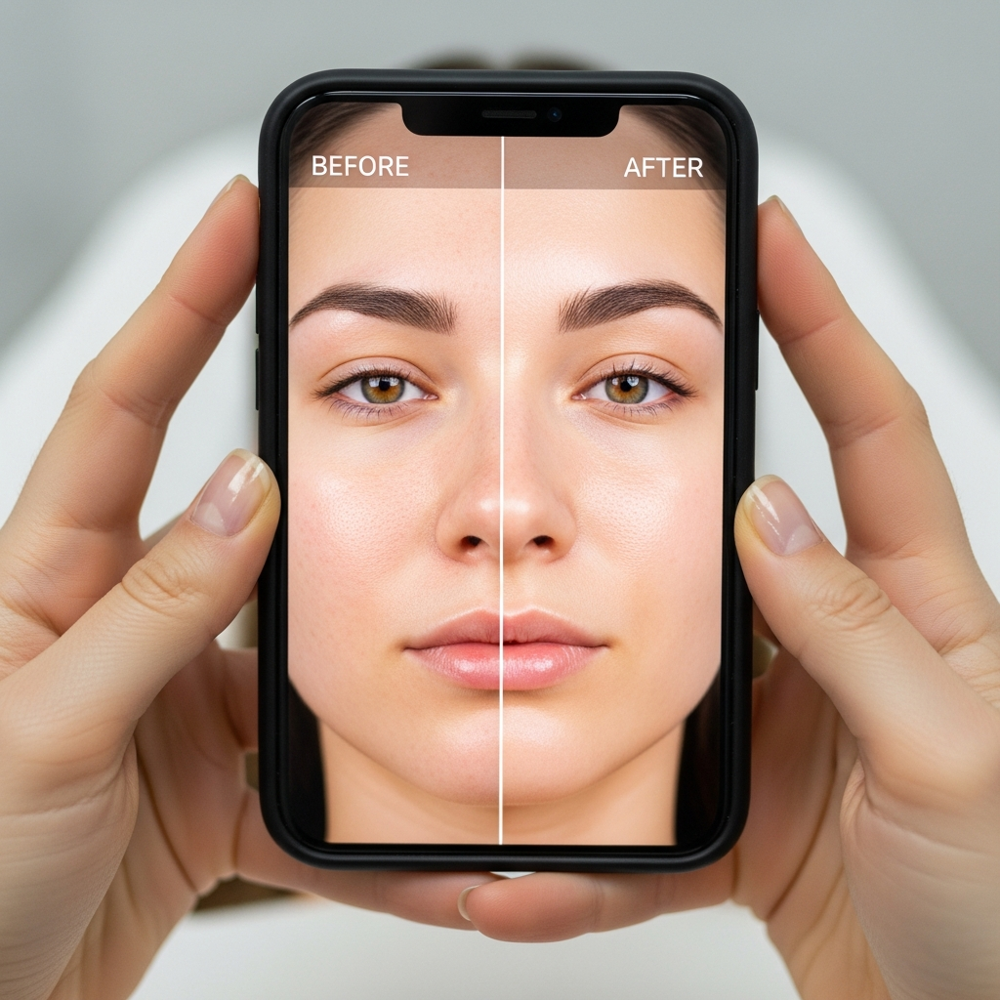

You're a doctor,
not a businessman.
You shouldn't have to be one.
Prepared for Dr Wesley Chan, Faith Cosmetic & Weight Loss
8 September 2026
By Kelly Wotherspoon & Alicia Hagen

CRM & Nurture Systems
"I use GHL via my virtual assistant recruitment agent. It's under their company account. I'm not very good at it, so I'm not managing the account myself. So that's my barrier."
- • Today GHL is a web form that lands in an inbox, on an account you do not own, run by a VA who has left. Podium and Phorest would be two more systems for you to coordinate. Everything they offer already lives inside GHL
- • Your own GHL, in your name, with all of it: forms, pipeline, SMS, email, consultation booking, missed-call text back, nurture, reminders, didn't-book follow-up, reactivation, reviews, reporting. Built, documented, handed over. Wesley should not be running it
- • The lead magnet and email education the other company suggested live here too: "Where do I start?" captures the enquiry, the education sequence answers the questions, the follow-up books the consult
- • Admin or VA support comes back with a system this time: the pipeline, the scripts, a response-time KPI, a cadence and booking targets. Their job is lead to consultation. Your job is consultation to clinical plan. Fixed before a dollar goes into ads

Speed-to-Lead & After Hours
"I used to have a VA who checked the inbox for me and helped me call patients, but the VA finished a little while ago."
- • Right now a new enquiry sits in an inbox until you are out of the hospital. Every day it waits is a patient who books somewhere with a receptionist
- • An assistant trained on your voice and your clinic replies inside a minute, day or night: what a consult involves, what Evolve X is, what to expect, then books the consultation into your calendar
- • Where a question needs a doctor, it is flagged to you with the whole conversation captured, so your reply starts where theirs left off
- • No VA to recruit, train and lose. The system answers every enquiry, every time, and it never resigns

"Where Do I Start?"
"There are people who come to see you just to start losing weight, because they don't know where to start."
- • Six questions in your patients' words: where they are in the journey, what they have tried, what is bothering them most, what they want back, when. Then a note from Dr Wesley on what he would look at first
- • Captures name, email and phone - every completion is a warm lead with concerns already mapped
- • Lives on website, Linktree, Instagram bio - works 24/7
- • Funnels into a doctor-led consultation booking. It is the top of the funnel, the link in the bio, and the first thing every ad points at

The Before & After Strategy
"After one treatment, for example in the tummy, you lose fat, you tighten the skin and you build up the muscle."
Two galleries, two compliance rules, one standard for consent and lighting:
Public Gallery
Evolve X body results, the ones already on your Instagram, live on the site with consent captured in the CRM, the same angle and light every time, and the required content note
Password-Protected
Anti-wrinkle, filler and skin booster results behind a password, shared after a consultation. AHPRA compliant, and the sale closes at the right moment
- • Public body results do the convincing before anyone books. Your competitors show a machine; you show a tummy at session one and session eight
- • The gated gallery is a consult tool, shown after consultation. Code shared in the room

What we actually do
The Hats We
Take Off You
So you can go back to being the doctor.
The only hat left is the one you trained twelve years for. The doctor.

How it works
Our Campaign Process
Client responds to your ad on Facebook or Instagram. They supply their details in exchange for your offer. From there, everything is automated.

Campaign
A concern-led ad reaches the person across Brisbane's southside who has tried everything and does not know where to start

Into CRM
They take the "Where do I start?" assessment. Name, phone, email and where they are in the journey, captured and tagged in your GHL

5-Day Follow Up
Automated SMS, email and call sequences if they don't book immediately

Booked
Doctor-led consultation booked and confirmed. You walk in and the patient is there
What you walk away with
Systems Installed
When you're not the one juggling 7 systems that don't talk to each other, life gets easier for everyone. We install systems that just do it - no copy-paste, no manual follow-up.


Leads Booked
New enquiries captured, answered, followed up and booked into your calendar, without you touching your phone between the hospital and the clinic

Clients Nurtured
Your existing patients wake up: course reminders, after-the-weight education, skin check reminders, reviews, on autopilot

Emails & DMs Handled
You don't need to answer the same questions all day - the system responds instantly, you focus on treating

After-Hours Covered
Enquiries handled outside clinic hours so you're not replying at 9pm - zero leads lost overnight
Team effort
Your Part in the Success
We can't control every aspect of your business. The overall success comes down to a team effort. Here's what we need from you.

Post Before & After Images
Shoot your Evolve X results in the same light every time, consent in the CRM. It takes 6 to 9 touches before someone books, and the results do the convincing.

Deliver the Experience
The system gets them through the door. From there, it is a doctor who looks at the whole picture that turns a first consult into a patient for years.

Create an Experience
One filming day a month at the clinic. The "Hey Dr Wes..." series: the questions everyone asks, filmed as if we have interrupted you between patients, so Brisbane gets to know your knowledge and your candour. That single day feeds a post every day and up to three reels a week.

Upsell & Rebook
Every consult ends with a plan. Every plan has a next session booked before they leave. That is where the real revenue lives.